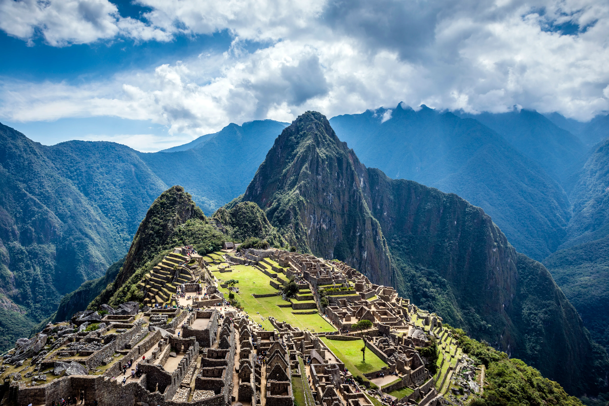
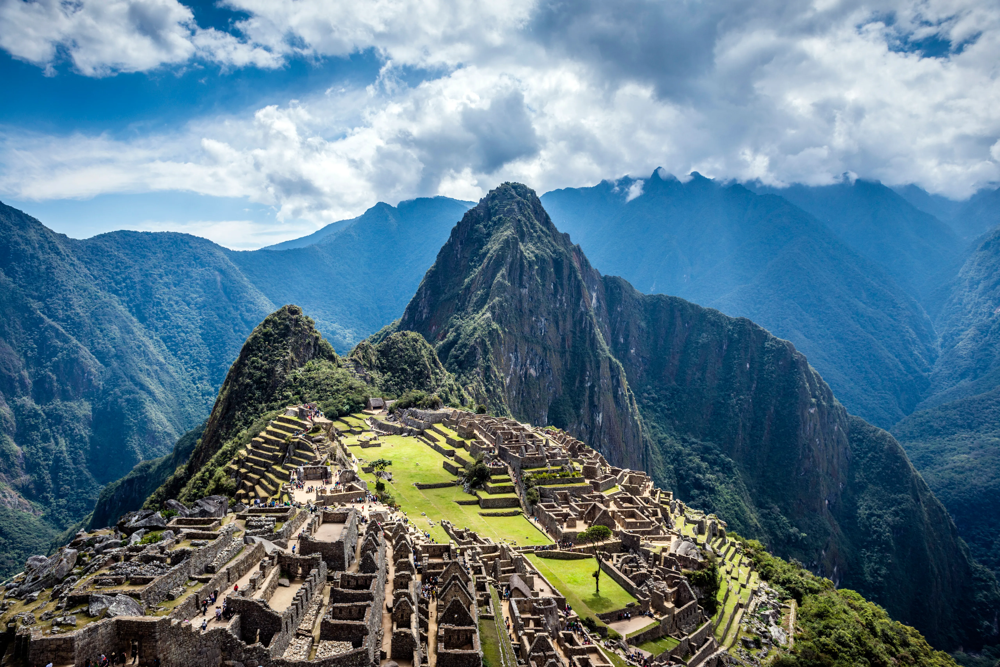

1. The Sun Gate (Inti Punku)
The Sun Gate (Inti Punku) is one of the most iconic landmarks of Machu Picchu, serving as the main entrance for those hiking the Inca Trail. This site holds historical and cultural significance as it was once a checkpoint for those entering the sacred city.
From the Sun Gate, visitors can enjoy breathtaking panoramic views of Machu Picchu. The site is also famous for its alignment with the sun, particularly during the summer solstice when the sunrise perfectly frames the entrance.
For hikers, reaching the Sun Gate marks the culmination of their journey along the Inca Trail, offering a rewarding first glimpse of the legendary Lost City of the Incas.